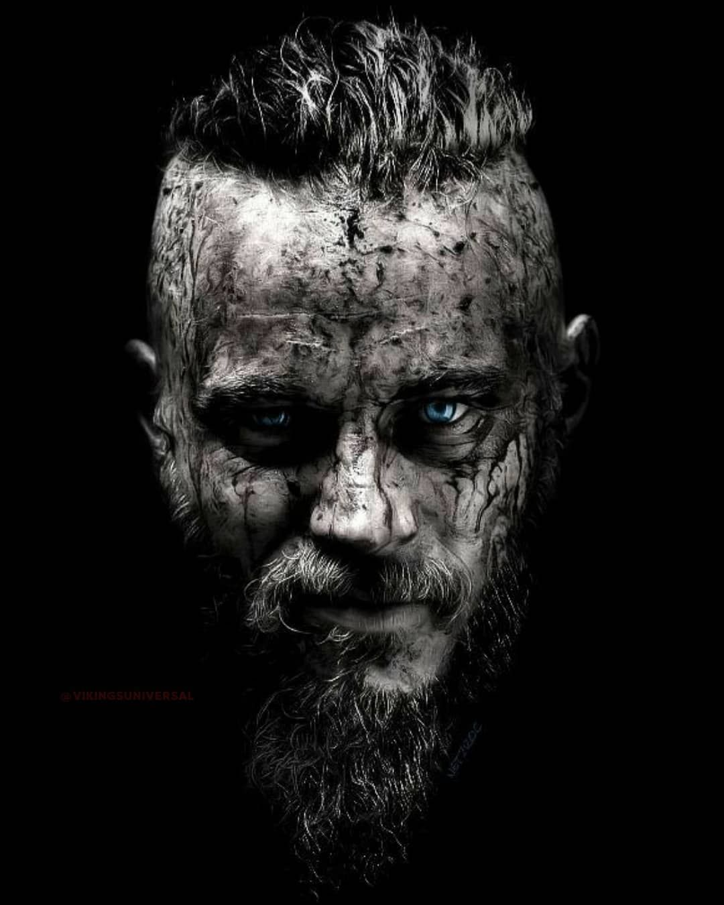

According to the Saga of Ragnar Lodbrok, Tale of Ragnar's sons, Heimskringla, Hervarar Saga, Sögubrot, and many
other Icelandic sources, Ragnar was the son of the Swedish king Sigurd Ring. Nearly all of the sagas agree that the
Danish king Randver was Sigurd's father, with the Hervarar saga citing his wife as Åsa, the daughter of King Harald
of the Red Moustache from Norway.
The accounts further tell that Randver was a grandson of the legendary
Scandinavian king Ivar Vidfamne by his daughter Aud (whom the Hervarar saga calls Alfhild).[5] After the death of
king Ivar Vidfamne, Aud's eldest son by the Danish king Hrœrekr Ringslinger, Harald, conquered all of his
grandfather's territory and became known as Harald Wartooth. Harald's nephew Sigurd Ring became the chief king of
Sweden after Randver's death (Denmark according to Hervarar saga), presumably as the subking of Harald. Sigurd and
Harald fought the Battle of the Brávellir (Bråvalla) on the plains of Östergötland, where Harald and many of his men
died. Sigurd then ruled Sweden and Denmark (being sometimes identified with a Danish king Sigfred who ruled from
about 770 until his death prior to 804). He sired a son with the Norwegian princess Alfhild of the semi-mythical
Álfar people, Ragnar Lodbrok, who succeeded him.[6] Eysteinn Beli, who according to the Hervarar Saga was Harald
Wartooth's son, ruled Sweden sometime after Sigurd until he was slain by the sons of Ragnar and Aslaug.[7]
In their accounts of his reign, the Sagas of Icelandic Prehistory, known as fornaldarsaga[8][9] tell more about
Ragnar's marriages than about feats of warfare. According to the Sögubrot, "he was the biggest and fairest of men
that human eyes have seen, and he was like his mother in appearance and took after her kin".[10] He first killed a
giant snake that guarded the abode of the East Geatic jarl's daughter Thora Borgarhjort, thereby winning her as his
wife. The unusual protective clothes that Ragnar wore, when attacking the serpent, earned him the nickname Lodbrok
("shaggy breeches"). His sons with Thora were Erik and Agnar. After Thora died, he discovered Kráka, a woman of
outstanding beauty and wisdom living with a poor peasant couple in Norway, and married her. This marriage resulted
in the sons Ivar the Boneless, Björn Ironside, Hvitserk, Ragnvald and Sigurd Snake-in-the-Eye.[11] Kráka was later
revealed to actually be Aslaug, a secret daughter of the renowned hero Sigurd Fafnesbane. As the sons grew up to
become renowned warriors, Ragnar, not wishing to be outdone, resolved to conquer England with merely two ships. He
was however defeated by superior English forces and was thrown into a snake pit to die in agony.[12] The Saga of
Ragnar Lodbrok, Tale of Ragnar's Sons, and Heimskringla all tell of the Great Heathen Army that invaded England at
around 866, led by the sons of Ragnar Lodbrok to wreak revenge against King Ælla of Northumbria who is told to have
captured and executed Ragnar.
